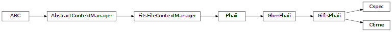

GIFTS PHAII Data (gdt.missions.gifts.phaii)¶
The primary science data produced by GIFTS post-launch will be summarized as a time history of
spectra, which will be provided as temporally pre-binned (CTIME and CSPEC) or
temporally unbinned (TTE). These data types will be continuously produced for
each GIFTS trigger.
The generated FITS data files will be read by the GiftsPhaii class.
For more details about working with PHAII data, see PHAII Files.
Reference/API¶
gdt.missions.gifts.phaii Module¶
Classes¶
PHAII class for GIFTS time history spectra. |
|
|
Class for GIFTS CTIME data. |
|
Class for GIFTS CSPEC data. |
Class Inheritance Diagram¶
